操作系统原理与实践
核心课程…… 5 学分啊
- 实验 40%
- 出勤、讨论 10%
- 期末 50% - 3 张 A4 纸
回顾
- 冯·诺伊曼 - fomulize 了计算机体系结构
- 三个部分：I/O System、CPU、Memory
- 香农 - Memory 是计算机里所有以二进制形式存储的信息
- 意思取决于怎么解释
- CPU - 用来改内存（比内存快 400 倍
- 包括 ALU、寄存器、control unit 几个部分
- 寄存器
- Data can be loaded from memory into a register
- Data can be stored from a register back into memory
- Operands and results of computations are in registers
- Accessing a register is really fast
- There is a limited number of registers
- 简化成三个阶段 - Fetch-Decode-Execute
- Direct Memory Access - DMA
- DMA Controler 从 CPU 得到数据传输的信息（通常写入某个寄存器
- 传输完成后再 interupt CPU
- 这样 CPU 能在 DMA 读磁盘时，自己继续执行程序
- DMA 和 CPU 都要用 memory bus 时，考虑 priority
- Memory Hierarchy - Cache（一般 3 级，L3 共享
- 利用 Temporal Locality（很有可能马上访问同一地址）和 Spatial Locality（很有可能马上访问相邻的地址）
- cache - SRAM
- main memory - DRAM
- Main memory and disk are managed by the OS
- 摩尔定律、多核
OS OverView
What is an OS
主要分为三个部分
- 概念
- Linux 的 demo
- 实验自己实现
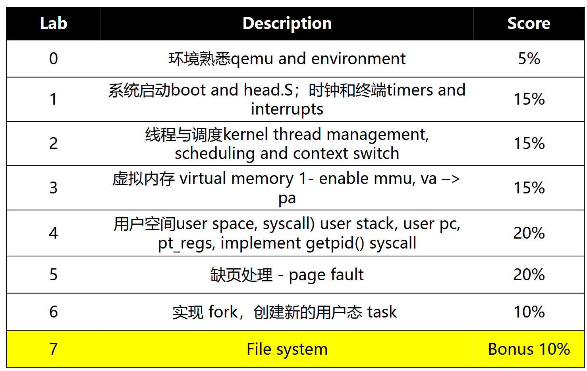
start_kernel() - C 语言执行的第一行
Dennis Ritchies(也是 C 语言之父), Brian Kernighan - Unix 之父
Richard Stallman - 开源之父，Emacs 和 GNU，以及 GCC
操作系统大概有多大：
- Windows: 50M lines of source code
- Linux: 25M lines of source code
什么是操作系统 - 介于硬件和 app 之间的软件层
- resource abstrctor - 内存抽象为文件，CPU 时间抽象为进程……
- resource allocator - 决定哪个程序获得什么资源
操作系统启动
- 电脑启动运行的第一个程序 - the bootstrap program
- 存在只读存储中（ROM
- Called the “firmware” or bootloader
- 实验中的 OpenSBI (Supervisor Binary Interface)
- The bootstrap program 初始化电脑（寄存器、控制器的内容等），it then locates and loads the OS kernel into memory
- kernel starts the first process (called “init” on Linux, “launchd” on Mac OS X)
- 然后 kernel 会等待事件，否则什么都不会发生
- 从 Single-user mode（一次只能做一件事）到 Batch processing（排队做事），现在：Multi-Programming（交替运行不同程序）
- Time-Sharing - Multi-programming with rapid context-switching
The kernel’s the one saying to a process "segmentation fault", 因此要写 lean/mean 的代码
Modes
Ubuntu = Linux core + GNU……
Android = Linux Kernel + 一大堆
想让操作系统与硬件交互，app 和硬件隔离
操作系统是怎样实现资源抽象和分配的：
- CPU 的特权模式 - 能执行特权指令（例如直接访问 I/O 设备、读写 CSR 等）
- 至少有两个模式 - Unprivileged mode/Privileged mode，由一个被保护的控制寄存器控制
- ARM64 Modes
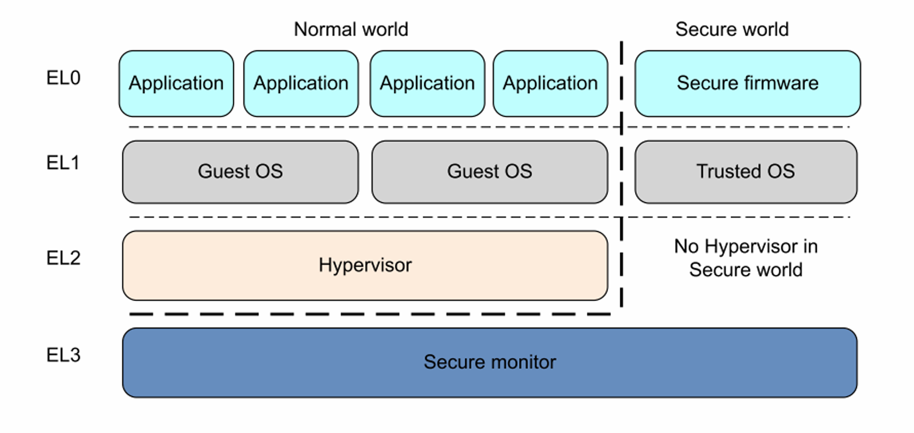
- RISC-V modes
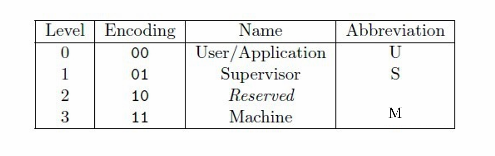
OS event
- An event is an “unusual” change in control flow
- event 会暂停程序，改变 mode，切换上下文（也就是开始运行 kernel code
- kernel 为每种 event 定义了 handler
void processEvent(event) {
switch (event.type) {
case NETWORK_COMMUNICATION:
NetworkManager.handleEvent(event);
break;
case SEGMENTATION_FAULT:
case INVALID_MODE:
ProcessManager.handleEvent(event);
break;
...
}
return;
}
- event 有两类 - interrupts and exceptions (traps)
- fault often refers to unexpected events
- Interrupt 由外部部件发出
- Exception 由执行中的程序发出（软件），例如除零异常
System Call
一种特殊的 exception
需要执行特权指令（如访问硬件等）会发出
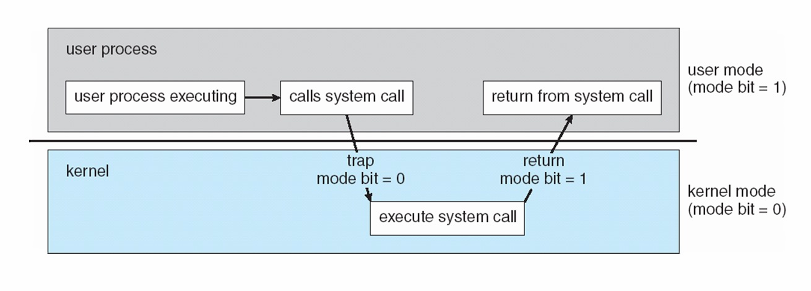
Timers - 度量 CPU 的使用
- 硬件 Timer 每隔一段时间 interrupt 一次 CPU，CPU 计数
- 设置 Timer 计数器的操作是需要权限的
Main OS Services
- Process Management
- Process - 进行中的程序
- OS 创建、停止进程等等
- Memory Management
- OS 保证访存不越界
- 分配内存
- Storage Management
- 把存储解释为文件
- I/O Management
- Protection and Security
- OS 管理内存和设备
- 保证进程对正确的资源的访问
- 防御病毒等攻击
In class discussion: which of these instructions should be privileged, and why?
Set value of the system timer✔️
Read the clock
Clear memory✔️
Issue a system call instruction
Turn off interrupts✔️
Modify entries in device-status table✔️
Access I/O device✔️
System Calls
程序通过 API 发起 System Calls
- kernal 提供给 user 的接口
- 是实现特权操作的命令
```c titile="example" printf("hello world\n");// 调用 output 设备 // 等价于 write(1,"hello world\n",13);// system call
不同架构的 system call
- x86-32
int $0x80 - x86-64
syscall - arm64
svc -
risc-V
ecall -
system call number
- system-call interface 维护一个 table，index 就是 system call number
- kernal 通过这个 number 决定调用哪个 sys call
strace 可以查看调用了哪些 sys call
OS structure
Operating System Services
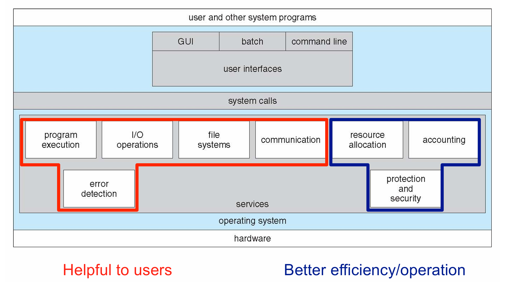
User and Operating System-Interface
CLI (command interpreter)
- 可能由 os/用户程序实现
- 可能有很多不同偏好的实现 - shells
- 从用户那取到命令并执行
- 内置命令/程序名称（后者加新功能不需要改动 shell
GUI - 图形化界面
Touchscreen Interfaces - 手机
System Calls
- os 提供服务的程序接口
- 一般由高级语言（c，c++）写成
- 通常通过 Application Programming Interface (API) 调用，而不是 syscall 指令
- transfer the control flow from user to kernel
Three most common APIs
- Win32 API for Windows
- POSIX API for POSIX-based systems (including virtually all versions of UNIX, Linux, and Mac OS X)
- Java API for the Java virtual machine (JVM)
printfis a wrapper of thewritesystem call
处理流程：
- kernel_entry code will be called
- Saved all user space registers
- calls write syscall handler
- Get from syscall_table, which is an array
- After write finish, call ret_to_user
- Restore all saved user space registers
- Transfer control flow to user space
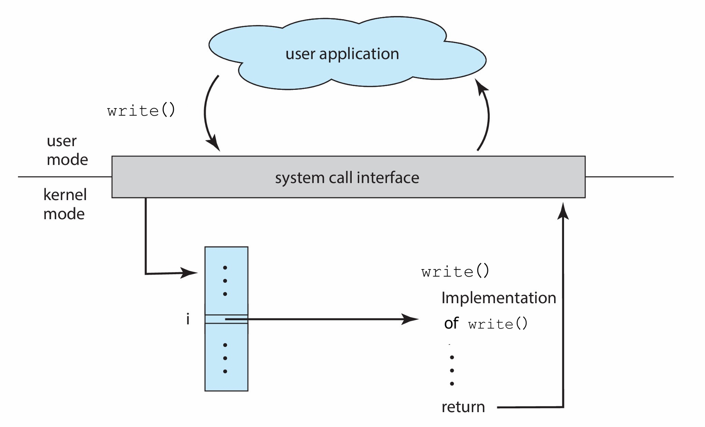
传递参数的方法
- 寄存器
- memory block（Linux and Solaris
- stack
后两种不限制参数的数量
Syscall 的类型
- Process control - 创建/终止进程，单步调试，上锁等
- File management - 创建/删除/读写文件，get and set file attributes
- Device management
- Information maintenance - 信息传递模型和共享内存模型
- Communications
- Protection
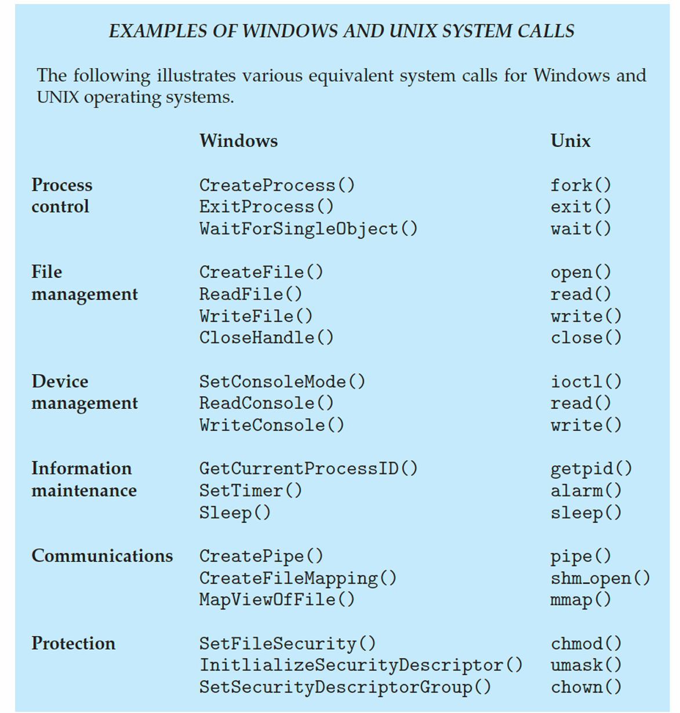
System Services
用户一般通过 system programs 获取操作系统的服务，not the actual system calls
System programs provide a convenient environment for program development and execution. They can be divided into:
- File manipulation
- Status information sometimes stored in a file - 获取日期、时间、磁盘空间等
- Programming language support
- Program loading and execution
- Communications
- Background services - Known as services, subsystems, daemons
- Application programs
Linkers and Loaders
system service 重要的一部分
- 源代码 -编译-> object files
- object files 可以 load 到任意物理内存 - relocatable object file
- Linker 把 object files 组合成 binary executable file（Also brings in libraries）
- binary executable file 由 loader 带到内存中才能执行
- Relocation assigns final addresses to program parts and adjusts code and data in program to match those addresses
- Modern general purpose systems don’t link libraries into executables - dynamically linked libraries
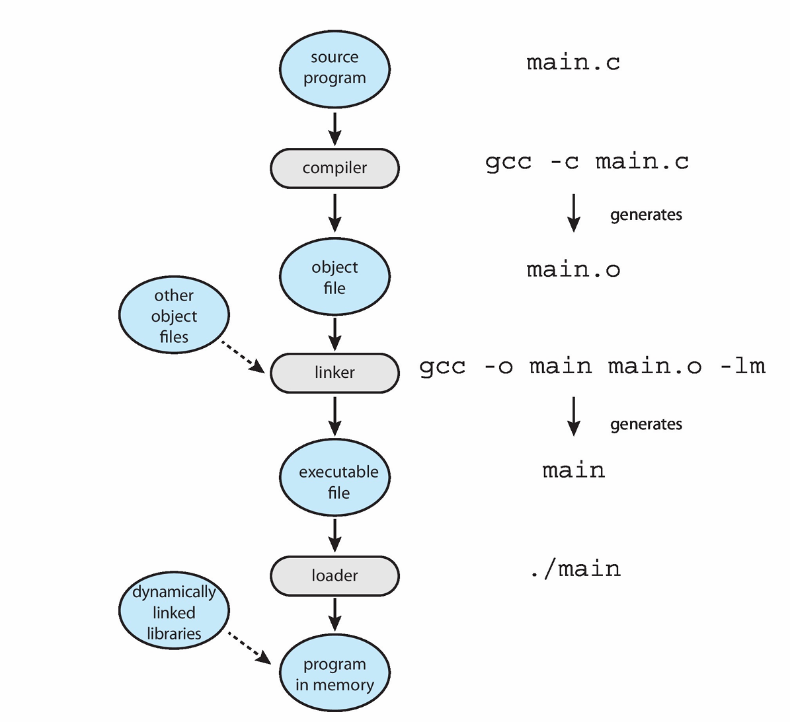
ELF binary file (Executable and Linkable Format) 有下面几个部分
- Program header table and section header table - For Linker and Loader
- .text: code
- .rodata: initialized read-only data
- .data: initialized data
- .bss: uninitialized data
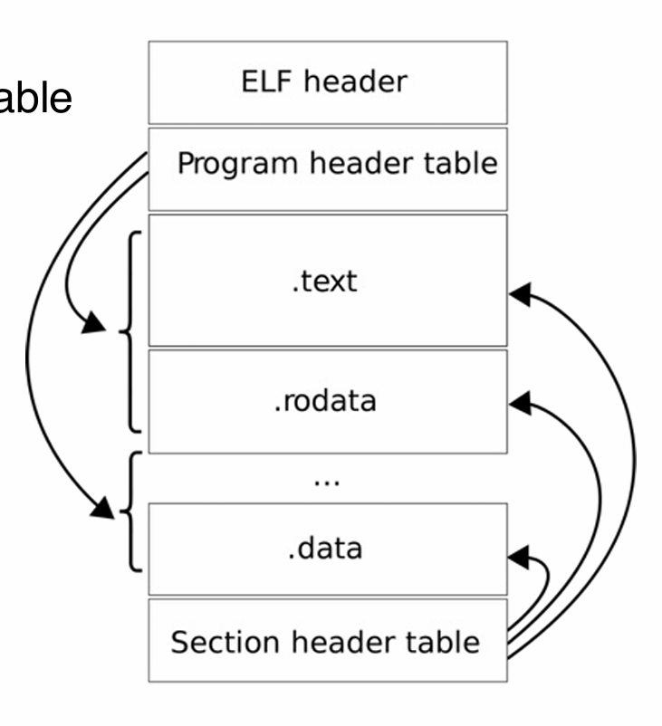
windows 通过后缀判断文件类型
linux 通过 magic number 判断
Linking
- static linking - 文件大，可移植性强（
gcc -static） - dynamic linking - 文件小，可移植性差
- 有 .interp section - loader
- lib call 由 loader handle
二者的内存映射不同
- dynamic linking 会在内存映射中多出很多 library
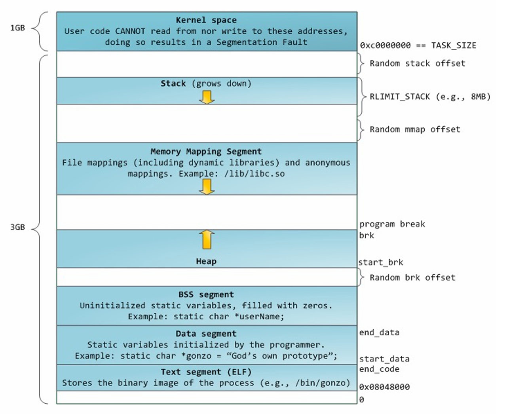
Who setups ELF file mapping?
Kernel, sys_exeute()，同时设置堆栈
Whosetups libraries?
loader, ld-xxx
static
- elf entry address - user space 从
_start开始执行 - kernal 将 PC 设为 elf entry address 实现跳转
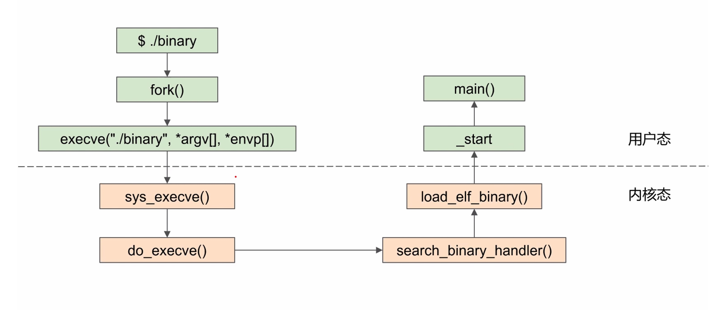
dynamic
- entry point 指向 .interp 的地址 (entry points to loader)
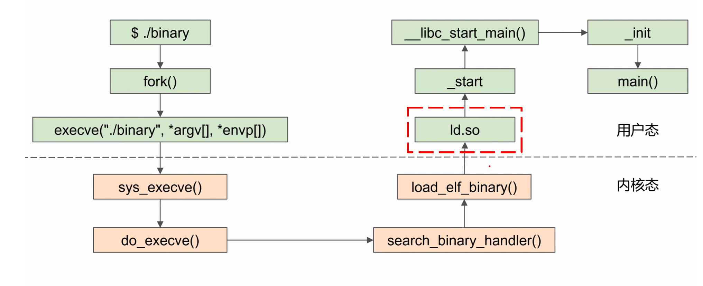
为什么 app 在不同系统上不能运行？
syscall 的 index 和命令都不同
python 在各个系统上都有解释器，java 有 VM
Application Binary Interface (ABI) 定义了某个特定架构下的二进制文件应该是怎样的
OS design
- 重要原则 - policy 和 mechanism 分开
- 各种 structure
- monolisic - 宏内核，UNIX
- layered approach
- microkernal - 把很多代码由 kernel 移到用户空间
- Mac OS
- message passing
- 性能差
- 混合内核
- loadable kernel modules (LKMs)
System boot
Operating system must be made available to hardware so hardware can start it * Small piece of code – bootstrap loader, BIOS, stored in ROM or EEPROM locates the kernel, loads it into memory, and starts it * Sometimes two-step process where boot block at fixed location loaded by ROM code, which loads bootstrap loader from disk * Modern systems replace BIOS with Unified Extensible Firmware Interface (UEFI) * Common bootstrap loader, GRUB, allows selection of kernel from multiple disks, versions, kernel options * Kernel loads and system is then running * Boot loaders frequently allow various boot states, such as single user mode
debug
- log files
- Failure of an application can generate core dump file capturing memory of the process
- Operating system failure can generate crash dump file containing kernel memory
- Beyond crashes, performance tuning can optimize system performance
- Sometimes using trace listings of activities, recorded for analysis
- Profiling is periodic sampling of instruction pointer to look for statistical trends
performence tuning - removing bottlenecks
“top” program or Windows Task Manager
OpenEuler
基于 Linux 内核的服务器操作系统
开源、免费的Linux发行平台
鲲鹏处理器是基于ARMv8-64指令集开发的通用处理器
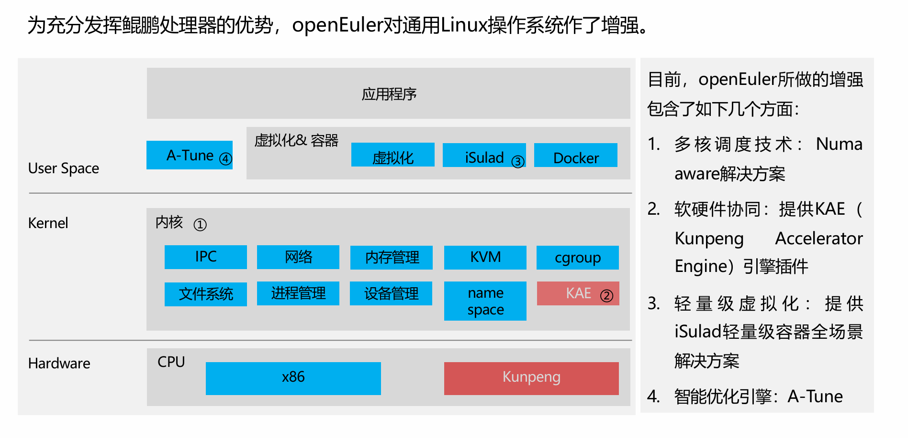